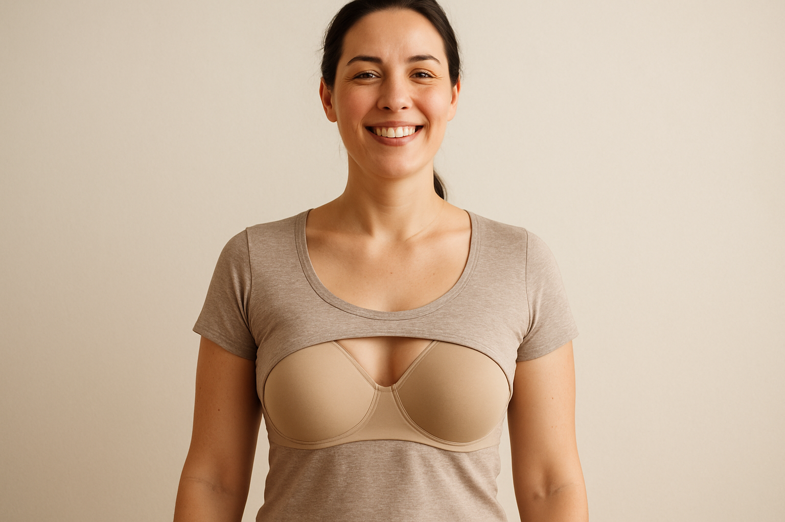

Benefits Of Well Fitting Bra
Benefits of a Well-Fitting Bra: More Than Just Support
For many women, a bra is a daily necessity, but its importance is often underestimated. A well-fitting bra is more than just an undergarment; it’s a crucial foundation that can significantly impact your physical comfort, posture, and overall confidence. Wearing a bra that fits correctly can alleviate common issues like back pain, shoulder strain, and poor posture, while also enhancing the fit of your clothes and boosting your self-esteem. If you’ve ever wondered whether your bra is truly working for you, this comprehensive guide is for you. We’ll explore the numerous benefits of wearing a well-fitting bra, highlighting why it’s an essential investment in your health and well-being.
Why a Well-Fitting Bra is So Important
A well-fitting bra provides the necessary support to distribute the weight of your breasts evenly, reducing strain on your back, neck, and shoulders. It also helps to maintain the shape and integrity of your breast tissue, preventing sagging and discomfort. Beyond the physical benefits, a bra that fits perfectly can make you feel more comfortable, confident, and put-together in your daily life.
Key Benefits of a Well-Fitting Bra
1. Improved Posture
A well-fitting bra provides essential support to your bust, which can help to improve your posture. By lifting and supporting the weight of your breasts, a good bra reduces the strain on your back and shoulders, making it easier to stand up straight and maintain a healthy posture.
2. Reduced Back, Neck, and Shoulder Pain
For women with larger busts, the weight of their breasts can cause significant back, neck, and shoulder pain. A supportive bra helps to distribute this weight more evenly, alleviating pressure on these areas and reducing discomfort.
3. Enhanced Comfort
A bra that fits correctly should feel comfortable and supportive, not restrictive or painful. When your bra fits well, you’ll forget you’re even wearing it, allowing you to go about your day with ease and comfort.
4. Better Fit of Clothing
A well-fitting bra creates a smooth, flattering silhouette, allowing your clothes to drape beautifully and fit as they were designed. It can enhance your figure and make you feel more confident in your appearance.
5. Increased Confidence
When you feel comfortable, supported, and confident in your appearance, it can have a positive impact on your overall self-esteem. A well-fitting bra can help you feel more put-together and ready to take on the day.
6. Prevents Breast Sagging
While some degree of breast sagging is natural with age, a supportive bra can help to minimize this by providing lift and support to the breast tissue. This is especially important during high-impact activities.
7. Better Performance During Exercise
A supportive sports bra is essential for any physical activity. It minimizes breast movement, reducing discomfort and preventing damage to the delicate ligaments in your breasts.
How to Know if Your Bra Fits Well
To reap the benefits of a well-fitting bra, it’s important to know what to look for:
- The Band: The band should be snug and level around your rib cage, not riding up at the back. It provides the majority of the support.
- The Cups: Your breasts should be fully contained within the cups, with no gaping, wrinkling, or spillage.
- The Underwire: The underwire should lie flat against your sternum and fully encircle your breast tissue without digging in or sitting on breast tissue.
- The Straps: The straps should be comfortable and not dig into your shoulders. They provide only a small amount of the support.
FAQs
Q: How often should I get fitted for a bra? A: It’s a good idea to get professionally fitted for a bra at least once a year, or whenever you experience significant changes in your body, such as weight loss or gain, pregnancy, or menopause.
Q: Can a well-fitting bra really make a difference in my daily life? A: Absolutely. A well-fitting bra can improve your comfort, posture, and confidence, making a noticeable difference in how you feel throughout the day.
Q: What are the signs that my bra doesn’t fit well? A: Common signs of a poor fit include digging straps, a band that rides up, gaping or overflowing cups, and an underwire that pokes or digs in.
Closing Paragraph + Disclosure
Investing in a well-fitting bra is an investment in your comfort, health, and confidence. By taking the time to find bras that fit you perfectly, you can enjoy the numerous benefits they offer, from improved posture and reduced pain to enhanced comfort and a more flattering silhouette. Embrace the transformative power of a well-fitting bra, and experience the difference it can make in your daily life.
Disclosure: This post contains affiliate links. We may earn a commission if you purchase through these links at no additional cost to you. We only recommend products we believe will benefit our readers.